Bayesian Spatial Models: A Pedagogical Walkthrough¶
This notebook demonstrates all five models currently implemented in bayespecon:
SLX
SAR
SEM
SDM
SDEM
Each section explains the model idea, fits the model, and inspects posterior summaries and spatial effects.
Conceptual Roadmap¶
Let \(W\) denote the spatial weights matrix and \(WX\) the spatial lag of covariates.
SLX: \(y = X\beta + WX\theta + \epsilon\)
SAR: \(y = \rho Wy + X\beta + \epsilon\)
SEM: \(y = X\beta + u\), \(u = \lambda Wu + \epsilon\)
SDM: \(y = \rho Wy + X\beta + WX\theta + \epsilon\)
SDEM: \(y = X\beta + WX\theta + u\), \(u = \lambda Wu + \epsilon\)
In bayespecon, all models accept either:
formula mode:
model_class(formula=..., data=..., W=...), ormatrix mode:
model_class(y=..., X=..., W=...).
import arviz as az
import geodatasets
import geopandas as gpd
import matplotlib.pyplot as plt
import numpy as np
import pandas as pd
from libpysal.graph import Graph
from bayespecon import OLS, SLX, SAR, SEM, SDM, SDEM
from bayespecon.diagnostics import (
bayesian_lm_lag_test,
bayesian_lm_error_test,
bayesian_lm_wx_test,
bayesian_lm_sdm_joint_test,
bayesian_lm_slx_error_joint_test,
summarize_bayesian_lm_test,
)
from bayespecon.diagnostics.bayesfactor import bayes_factor_compare_models
az.style.use("arviz-white")
/home/runner/micromamba/envs/test/lib/python3.14/site-packages/tqdm/auto.py:21: TqdmWarning: IProgress not found. Please update jupyter and ipywidgets. See https://ipywidgets.readthedocs.io/en/stable/user_install.html
from .autonotebook import tqdm as notebook_tqdm
# Load sample spatial dataset
gdf = gpd.read_file(geodatasets.data.geoda.airbnb.url)
xcols = ["poverty", "rev_rating", "num_spots", "crowded"]
ycol = "price_pp"
gdf = gdf.dropna(subset=xcols + [ycol]).copy()
# Build contiguity graph (queen)
W = Graph.build_contiguity(gdf, rook=False).transform('r')
print(f"Observations: {len(gdf)}")
print(f"Predictors: {xcols}")
Observations: 67
Predictors: ['poverty', 'rev_rating', 'num_spots', 'crowded']
Helper Functions
To keep each model section focused, we use utility functions to:
fit with consistent MCMC settings,
print posterior summaries,
tabulate direct/indirect/total effects.
For a quick pedagogical run, we use small draw counts. Increase these for real inference.
def fit_and_report(model_cls, formula, data, W, draws=400, tune=400, chains=4, seed=42):
"""Fit a spatial model and return (model, summary, effects_df).
Uses minimal MCMC settings for pedagogical demonstration.
Increase draws/tune for real analyses.
"""
model = model_cls(formula=formula, data=data, W=W, logdet_method="eigenvalue")
model.fit(
draws=draws,
tune=tune,
chains=chains,
target_accept=0.9,
random_seed=seed,
progressbar=False,
idata_kwargs={"log_likelihood": True},
)
summary = model.summary(round_to=3)
effects_df = pd.DataFrame(model.spatial_effects())
return model, summary, effects_df
Convergence Diagnostics Helper
For each fitted model, we will inspect:
r_hat(target close to 1.00)effective sample sizes (
ess_bulk,ess_tail)trace plots for key parameters.
def diagnostics_table(idata, var_names):
"""Show key MCMC diagnostics for the given parameters."""
cols = ["mean", "sd", "ess_bulk", "ess_tail", "r_hat"]
return az.summary(idata, var_names=var_names, round_to=3)[cols]
def show_trace(idata, var_names, title):
"""Plot trace plots for the given parameters."""
az.plot_trace(idata, var_names=var_names)
plt.suptitle(title, y=1.02)
plt.tight_layout()
plt.show()
Models¶
0) OLS: What could go wrong?¶
Model:
ols = OLS(
formula="price_pp ~ poverty + rev_rating + num_spots + crowded",
data=gdf,
W=W,
)
olsfit = ols.fit(
draws=400, tune=400, chains=4, target_accept=0.9,
random_seed=42, progressbar=False,
idata_kwargs={"log_likelihood": True},
)
Initializing NUTS using jitter+adapt_diag...
Multiprocess sampling (4 chains in 2 jobs)
NUTS: [beta, sigma]
/home/runner/micromamba/envs/test/lib/python3.14/site-packages/pymc/step_methods/hmc/quadpotential.py:316: RuntimeWarning: overflow encountered in dot
return 0.5 * np.dot(x, v_out)
Sampling 4 chains for 400 tune and 400 draw iterations (1_600 + 1_600 draws total) took 15 seconds.
ols.summary()
| mean | sd | hdi_3% | hdi_97% | mcse_mean | mcse_sd | ess_bulk | ess_tail | r_hat | |
|---|---|---|---|---|---|---|---|---|---|
| Intercept | -3.922 | 87.414 | -173.156 | 159.941 | 3.412 | 2.274 | 660.0 | 745.0 | 1.00 |
| poverty | 0.272 | 0.327 | -0.297 | 0.922 | 0.010 | 0.008 | 984.0 | 1007.0 | 1.00 |
| rev_rating | 0.790 | 0.921 | -1.044 | 2.502 | 0.036 | 0.024 | 669.0 | 794.0 | 1.00 |
| num_spots | 0.120 | 0.024 | 0.079 | 0.164 | 0.001 | 0.001 | 1381.0 | 1128.0 | 1.00 |
| crowded | -2.295 | 0.902 | -4.033 | -0.665 | 0.027 | 0.023 | 1150.0 | 1066.0 | 1.00 |
| sigma | 26.398 | 2.131 | 22.378 | 30.346 | 0.057 | 0.055 | 1389.0 | 1035.0 | 1.01 |
1) SLX: Spatially Lagged Covariates Only¶
Model:
Interpretation:
betacaptures local covariate effects.thetacaptures neighbor-covariate spillovers.No spatial lag on \(y\), so no autoregressive propagation through outcomes.
slx, summary_slx, effects_slx = fit_and_report(
SLX,
formula="price_pp ~ poverty + rev_rating + num_spots + crowded",
data=gdf,
W=W,
)
display(summary_slx)
display(effects_slx)
Initializing NUTS using jitter+adapt_diag...
Multiprocess sampling (4 chains in 2 jobs)
NUTS: [beta, sigma]
/home/runner/micromamba/envs/test/lib/python3.14/site-packages/pymc/step_methods/hmc/quadpotential.py:316: RuntimeWarning: overflow encountered in dot
return 0.5 * np.dot(x, v_out)
Sampling 4 chains for 400 tune and 400 draw iterations (1_600 + 1_600 draws total) took 23 seconds.
| mean | sd | hdi_3% | hdi_97% | mcse_mean | mcse_sd | ess_bulk | ess_tail | r_hat | |
|---|---|---|---|---|---|---|---|---|---|
| Intercept | 189.574 | 210.163 | -167.015 | 627.688 | 8.939 | 6.045 | 552.011 | 683.690 | 1.007 |
| poverty | -0.675 | 0.455 | -1.527 | 0.168 | 0.015 | 0.010 | 946.699 | 1202.923 | 1.001 |
| rev_rating | 0.343 | 0.889 | -1.261 | 2.019 | 0.030 | 0.022 | 858.478 | 995.480 | 1.002 |
| num_spots | 0.021 | 0.030 | -0.037 | 0.074 | 0.001 | 0.001 | 1059.799 | 938.293 | 1.005 |
| crowded | -1.030 | 1.165 | -3.224 | 1.098 | 0.036 | 0.024 | 1025.749 | 1059.615 | 1.000 |
| W*poverty | 1.183 | 0.668 | -0.014 | 2.446 | 0.028 | 0.018 | 598.411 | 832.256 | 1.006 |
| W*rev_rating | -1.763 | 1.814 | -5.026 | 1.749 | 0.072 | 0.048 | 639.098 | 768.137 | 1.005 |
| W*num_spots | 0.201 | 0.046 | 0.122 | 0.288 | 0.001 | 0.001 | 1041.499 | 1223.241 | 1.003 |
| W*crowded | -1.435 | 1.572 | -4.655 | 1.306 | 0.053 | 0.035 | 881.426 | 1109.505 | 1.003 |
| sigma | 23.648 | 2.047 | 20.086 | 27.515 | 0.062 | 0.052 | 1098.255 | 1117.649 | 1.001 |
| direct | direct_ci_lower | direct_ci_upper | direct_pvalue | indirect | indirect_ci_lower | indirect_ci_upper | indirect_pvalue | total | total_ci_lower | total_ci_upper | total_pvalue | |
|---|---|---|---|---|---|---|---|---|---|---|---|---|
| variable | ||||||||||||
| poverty | -0.674834 | -1.560399 | 0.207956 | 0.13375 | 1.183429 | -0.121623 | 2.508287 | 0.06875 | 0.508595 | -0.427303 | 1.553064 | 0.31375 |
| rev_rating | 0.342909 | -1.341800 | 2.094372 | 0.68125 | -1.762965 | -5.199795 | 1.912176 | 0.31750 | -1.420056 | -5.765232 | 2.970336 | 0.49000 |
| num_spots | 0.020759 | -0.035625 | 0.080420 | 0.49750 | 0.201125 | 0.109459 | 0.286015 | 0.00000 | 0.221883 | 0.161526 | 0.283079 | 0.00000 |
| crowded | -1.029607 | -3.224310 | 1.321937 | 0.39250 | -1.434761 | -4.610449 | 1.562538 | 0.38000 | -2.464368 | -4.825579 | -0.128478 | 0.04000 |
az.plot_forest(slx.inference_data)
display(diagnostics_table(slx.inference_data, ["beta", "sigma"]))
show_trace(slx.inference_data, ["sigma"], "SLX Trace: sigma")
| mean | sd | ess_bulk | ess_tail | r_hat | |
|---|---|---|---|---|---|
| beta[Intercept] | 189.574 | 210.163 | 552.011 | 683.690 | 1.007 |
| beta[poverty] | -0.675 | 0.455 | 946.699 | 1202.923 | 1.001 |
| beta[rev_rating] | 0.343 | 0.889 | 858.478 | 995.480 | 1.002 |
| beta[num_spots] | 0.021 | 0.030 | 1059.799 | 938.293 | 1.005 |
| beta[crowded] | -1.030 | 1.165 | 1025.749 | 1059.615 | 1.000 |
| beta[W*poverty] | 1.183 | 0.668 | 598.411 | 832.256 | 1.006 |
| beta[W*rev_rating] | -1.763 | 1.814 | 639.098 | 768.137 | 1.005 |
| beta[W*num_spots] | 0.201 | 0.046 | 1041.499 | 1223.241 | 1.003 |
| beta[W*crowded] | -1.435 | 1.572 | 881.426 | 1109.505 | 1.003 |
| sigma | 23.648 | 2.047 | 1098.255 | 1117.649 | 1.001 |
/tmp/ipykernel_7231/3581438262.py:11: UserWarning: The figure layout has changed to tight
plt.tight_layout()
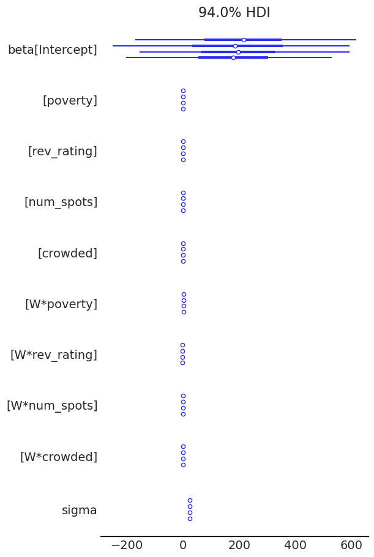
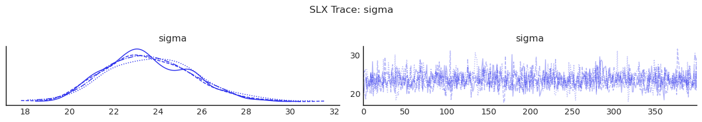
2) SAR: Spatial Lag of Outcome¶
Model:
Interpretation:
\(\rho\) controls feedback from neighboring outcomes.
Effects are amplified through \((I - \rho W)^{-1}\), so direct and indirect impacts differ from raw \(\beta\).
sar, summary_sar, effects_sar = fit_and_report(
SAR,
formula="price_pp ~ poverty + rev_rating + num_spots + crowded",
data=gdf,
W=W,
)
display(summary_sar)
display(effects_sar)
Initializing NUTS using jitter+adapt_diag...
Multiprocess sampling (4 chains in 2 jobs)
NUTS: [rho, beta, sigma]
/home/runner/micromamba/envs/test/lib/python3.14/site-packages/pymc/step_methods/hmc/quadpotential.py:316: RuntimeWarning: overflow encountered in dot
return 0.5 * np.dot(x, v_out)
/home/runner/micromamba/envs/test/lib/python3.14/site-packages/pymc/step_methods/hmc/quadpotential.py:316: RuntimeWarning: overflow encountered in dot
return 0.5 * np.dot(x, v_out)
Sampling 4 chains for 400 tune and 400 draw iterations (1_600 + 1_600 draws total) took 16 seconds.
| mean | sd | hdi_3% | hdi_97% | mcse_mean | mcse_sd | ess_bulk | ess_tail | r_hat | |
|---|---|---|---|---|---|---|---|---|---|
| Intercept | -43.650 | 78.768 | -200.765 | 95.548 | 2.883 | 2.184 | 745.206 | 897.104 | 1.006 |
| poverty | 0.100 | 0.316 | -0.488 | 0.677 | 0.010 | 0.009 | 1064.785 | 1027.666 | 1.005 |
| rev_rating | 0.913 | 0.825 | -0.453 | 2.611 | 0.031 | 0.022 | 715.441 | 932.399 | 1.006 |
| num_spots | 0.077 | 0.025 | 0.030 | 0.126 | 0.001 | 0.001 | 1296.118 | 1029.851 | 1.002 |
| crowded | -1.748 | 0.860 | -3.493 | -0.265 | 0.024 | 0.021 | 1290.005 | 1084.390 | 1.002 |
| rho | 0.439 | 0.140 | 0.170 | 0.694 | 0.004 | 0.004 | 1251.185 | 938.602 | 1.009 |
| sigma | 24.315 | 2.152 | 20.449 | 28.357 | 0.062 | 0.059 | 1193.522 | 1006.979 | 1.001 |
| direct | direct_ci_lower | direct_ci_upper | direct_pvalue | indirect | indirect_ci_lower | indirect_ci_upper | indirect_pvalue | total | total_ci_lower | total_ci_upper | total_pvalue | |
|---|---|---|---|---|---|---|---|---|---|---|---|---|
| variable | ||||||||||||
| poverty | 0.103270 | -0.569727 | 0.750255 | 0.73125 | 0.050322 | -0.659327 | 0.651505 | 0.73500 | 0.153591 | -1.215315 | 1.303442 | 0.73125 |
| rev_rating | 0.971991 | -0.739878 | 2.707951 | 0.26000 | 0.767987 | -0.486534 | 3.057629 | 0.26375 | 1.739977 | -1.183852 | 5.382396 | 0.26000 |
| num_spots | 0.081282 | 0.032140 | 0.134003 | 0.00000 | 0.058741 | 0.014567 | 0.140535 | 0.00375 | 0.140023 | 0.061422 | 0.235276 | 0.00000 |
| crowded | -1.852929 | -3.615410 | -0.017002 | 0.04750 | -1.387262 | -3.980152 | 0.002979 | 0.05125 | -3.240191 | -6.860549 | -0.034940 | 0.04750 |
az.plot_forest(sar.inference_data)
display(diagnostics_table(sar.inference_data, ["rho", "beta", "sigma"]))
show_trace(sar.inference_data, ["rho", "sigma"], "SAR Trace: rho, sigma")
| mean | sd | ess_bulk | ess_tail | r_hat | |
|---|---|---|---|---|---|
| rho | 0.439 | 0.140 | 1251.185 | 938.602 | 1.009 |
| beta[Intercept] | -43.650 | 78.768 | 745.206 | 897.104 | 1.006 |
| beta[poverty] | 0.100 | 0.316 | 1064.785 | 1027.666 | 1.005 |
| beta[rev_rating] | 0.913 | 0.825 | 715.441 | 932.399 | 1.006 |
| beta[num_spots] | 0.077 | 0.025 | 1296.118 | 1029.851 | 1.002 |
| beta[crowded] | -1.748 | 0.860 | 1290.005 | 1084.390 | 1.002 |
| sigma | 24.315 | 2.152 | 1193.522 | 1006.979 | 1.001 |
/tmp/ipykernel_7231/3581438262.py:11: UserWarning: The figure layout has changed to tight
plt.tight_layout()
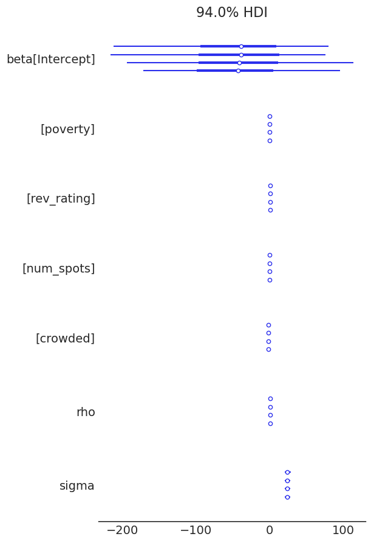
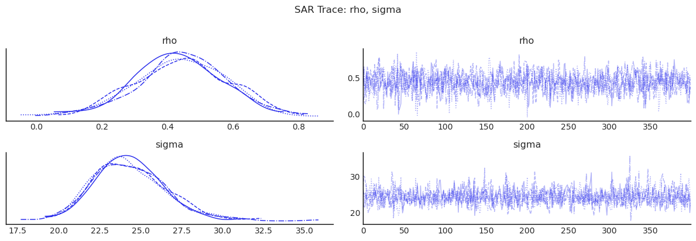
3) SEM: Spatial Correlation in Errors¶
Model:
Interpretation:
Spatial dependence is moved to latent shocks rather than outcome feedback.
Useful when omitted spatial factors induce correlated residuals.
sem, summary_sem, effects_sem = fit_and_report(
SEM,
formula="price_pp ~ poverty + rev_rating + num_spots + crowded",
data=gdf,
W=W,
)
display(summary_sem)
display(effects_sem)
Initializing NUTS using jitter+adapt_diag...
Multiprocess sampling (4 chains in 2 jobs)
NUTS: [lam, beta, sigma]
/home/runner/micromamba/envs/test/lib/python3.14/site-packages/pymc/step_methods/hmc/quadpotential.py:316: RuntimeWarning: overflow encountered in dot
return 0.5 * np.dot(x, v_out)
/home/runner/micromamba/envs/test/lib/python3.14/site-packages/pymc/step_methods/hmc/quadpotential.py:316: RuntimeWarning: overflow encountered in dot
return 0.5 * np.dot(x, v_out)
Sampling 4 chains for 400 tune and 400 draw iterations (1_600 + 1_600 draws total) took 14 seconds.
There were 8 divergences after tuning. Increase `target_accept` or reparameterize.
| mean | sd | hdi_3% | hdi_97% | mcse_mean | mcse_sd | ess_bulk | ess_tail | r_hat | |
|---|---|---|---|---|---|---|---|---|---|
| Intercept | -25.898 | 78.761 | -168.289 | 119.014 | 3.499 | 2.665 | 514.773 | 532.841 | 1.005 |
| poverty | -0.130 | 0.443 | -1.031 | 0.634 | 0.014 | 0.011 | 966.094 | 1214.679 | 1.001 |
| rev_rating | 1.111 | 0.839 | -0.493 | 2.598 | 0.038 | 0.029 | 509.233 | 456.981 | 1.006 |
| num_spots | 0.072 | 0.035 | 0.009 | 0.137 | 0.001 | 0.001 | 726.381 | 684.712 | 1.003 |
| crowded | -1.838 | 1.110 | -3.860 | 0.278 | 0.032 | 0.028 | 1215.646 | 1076.667 | 1.001 |
| lam | 0.509 | 0.183 | 0.172 | 0.861 | 0.008 | 0.007 | 554.812 | 277.570 | 1.003 |
| sigma | 24.989 | 2.228 | 21.178 | 29.582 | 0.066 | 0.066 | 1162.391 | 996.848 | 1.003 |
| direct | direct_ci_lower | direct_ci_upper | direct_pvalue | indirect | indirect_ci_lower | indirect_ci_upper | indirect_pvalue | total | total_ci_lower | total_ci_upper | total_pvalue | |
|---|---|---|---|---|---|---|---|---|---|---|---|---|
| variable | ||||||||||||
| poverty | -0.129780 | -1.031413 | 0.735544 | 0.79625 | 0.0 | 0.0 | 0.0 | 0.0 | -0.129780 | -1.031413 | 0.735544 | 0.79625 |
| rev_rating | 1.111085 | -0.538376 | 2.678714 | 0.18500 | 0.0 | 0.0 | 0.0 | 0.0 | 1.111085 | -0.538376 | 2.678714 | 0.18500 |
| num_spots | 0.071510 | 0.001856 | 0.137695 | 0.04000 | 0.0 | 0.0 | 0.0 | 0.0 | 0.071510 | 0.001856 | 0.137695 | 0.04000 |
| crowded | -1.838412 | -3.929422 | 0.429547 | 0.10625 | 0.0 | 0.0 | 0.0 | 0.0 | -1.838412 | -3.929422 | 0.429547 | 0.10625 |
az.plot_forest(sem.inference_data)
display(diagnostics_table(sem.inference_data, ["lam", "beta", "sigma"]))
show_trace(sem.inference_data, ["lam", "sigma"], "SEM Trace: lam, sigma")
| mean | sd | ess_bulk | ess_tail | r_hat | |
|---|---|---|---|---|---|
| lam | 0.509 | 0.183 | 554.812 | 277.570 | 1.003 |
| beta[Intercept] | -25.898 | 78.761 | 514.773 | 532.841 | 1.005 |
| beta[poverty] | -0.130 | 0.443 | 966.094 | 1214.679 | 1.001 |
| beta[rev_rating] | 1.111 | 0.839 | 509.233 | 456.981 | 1.006 |
| beta[num_spots] | 0.072 | 0.035 | 726.381 | 684.712 | 1.003 |
| beta[crowded] | -1.838 | 1.110 | 1215.646 | 1076.667 | 1.001 |
| sigma | 24.989 | 2.228 | 1162.391 | 996.848 | 1.003 |
/tmp/ipykernel_7231/3581438262.py:11: UserWarning: The figure layout has changed to tight
plt.tight_layout()
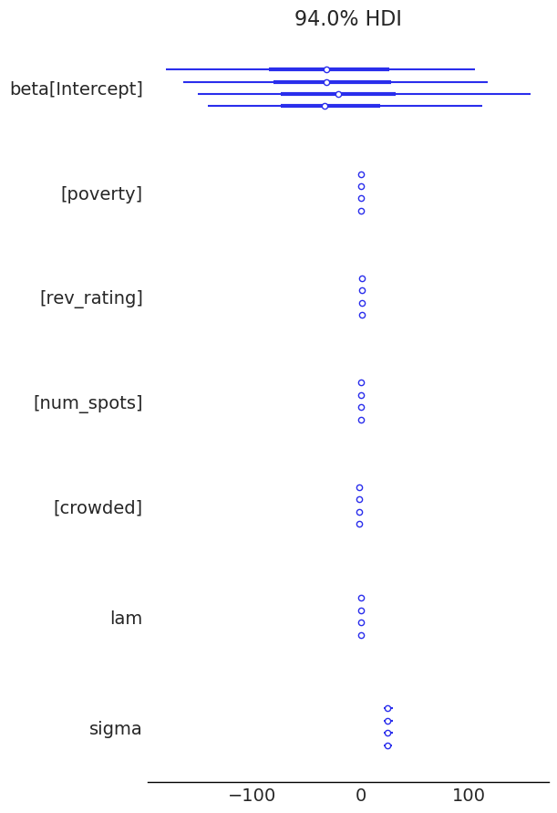
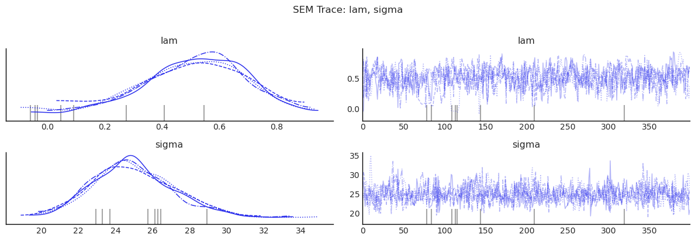
4) SDM: SAR + SLX¶
Model:
Interpretation:
Includes both outcome feedback and neighbor-covariate channels.
Often used as a flexible nesting model for SAR/SLX.
sdm, summary_sdm, effects_sdm = fit_and_report(
SDM,
formula="price_pp ~ poverty + rev_rating + num_spots + crowded",
data=gdf,
W=W,
)
display(summary_sdm)
display(effects_sdm)
Initializing NUTS using jitter+adapt_diag...
Multiprocess sampling (4 chains in 2 jobs)
NUTS: [rho, beta, sigma]
/home/runner/micromamba/envs/test/lib/python3.14/site-packages/pymc/step_methods/hmc/quadpotential.py:316: RuntimeWarning: overflow encountered in dot
return 0.5 * np.dot(x, v_out)
/home/runner/micromamba/envs/test/lib/python3.14/site-packages/pymc/step_methods/hmc/quadpotential.py:316: RuntimeWarning: overflow encountered in dot
return 0.5 * np.dot(x, v_out)
Sampling 4 chains for 400 tune and 400 draw iterations (1_600 + 1_600 draws total) took 26 seconds.
| mean | sd | hdi_3% | hdi_97% | mcse_mean | mcse_sd | ess_bulk | ess_tail | r_hat | |
|---|---|---|---|---|---|---|---|---|---|
| Intercept | 192.602 | 197.311 | -194.214 | 552.073 | 7.174 | 5.346 | 752.245 | 825.749 | 1.005 |
| poverty | -0.691 | 0.431 | -1.515 | 0.119 | 0.013 | 0.011 | 1083.248 | 1085.405 | 1.003 |
| rev_rating | 0.409 | 0.855 | -1.095 | 2.154 | 0.025 | 0.022 | 1141.296 | 993.185 | 1.003 |
| num_spots | 0.016 | 0.031 | -0.043 | 0.072 | 0.001 | 0.001 | 1165.213 | 1244.267 | 1.007 |
| crowded | -1.035 | 1.144 | -3.073 | 1.183 | 0.035 | 0.025 | 1082.196 | 1244.503 | 1.002 |
| W*poverty | 1.023 | 0.651 | -0.209 | 2.210 | 0.022 | 0.014 | 871.928 | 1166.753 | 1.001 |
| W*rev_rating | -2.006 | 1.767 | -5.350 | 1.148 | 0.060 | 0.043 | 868.648 | 889.136 | 1.003 |
| W*num_spots | 0.166 | 0.050 | 0.074 | 0.261 | 0.002 | 0.001 | 872.363 | 1196.654 | 1.004 |
| W*crowded | -0.934 | 1.706 | -4.007 | 2.152 | 0.053 | 0.038 | 1040.296 | 1225.345 | 1.002 |
| rho | 0.239 | 0.162 | -0.062 | 0.551 | 0.005 | 0.004 | 1275.488 | 1187.169 | 1.002 |
| sigma | 23.187 | 2.055 | 19.475 | 26.918 | 0.055 | 0.055 | 1392.929 | 1066.343 | 0.999 |
| direct | direct_ci_lower | direct_ci_upper | direct_pvalue | indirect | indirect_ci_lower | indirect_ci_upper | indirect_pvalue | total | total_ci_lower | total_ci_upper | total_pvalue | |
|---|---|---|---|---|---|---|---|---|---|---|---|---|
| variable | ||||||||||||
| poverty | -0.647269 | -1.444526 | 0.235586 | 0.12875 | 1.069852 | -0.464521 | 2.532650 | 0.17500 | 0.422583 | -1.074571 | 1.767189 | 0.50375 |
| rev_rating | 0.285608 | -1.447613 | 2.096370 | 0.74875 | -2.529045 | -8.089502 | 2.249513 | 0.29000 | -2.243437 | -8.905225 | 3.500816 | 0.43500 |
| num_spots | 0.026125 | -0.031623 | 0.085046 | 0.36750 | 0.218146 | 0.111995 | 0.338539 | 0.00000 | 0.244271 | 0.161811 | 0.353908 | 0.00000 |
| crowded | -1.097486 | -3.362976 | 1.020728 | 0.33250 | -1.497818 | -5.273957 | 2.287999 | 0.43375 | -2.595303 | -5.913159 | 0.723464 | 0.11625 |
az.plot_forest(sdm.inference_data)
display(diagnostics_table(sdm.inference_data, ["rho", "beta", "sigma"]))
show_trace(sdm.inference_data, ["rho", "sigma"], "SDM Trace: rho, sigma")
| mean | sd | ess_bulk | ess_tail | r_hat | |
|---|---|---|---|---|---|
| rho | 0.239 | 0.162 | 1275.488 | 1187.169 | 1.002 |
| beta[Intercept] | 192.602 | 197.311 | 752.245 | 825.749 | 1.005 |
| beta[poverty] | -0.691 | 0.431 | 1083.248 | 1085.405 | 1.003 |
| beta[rev_rating] | 0.409 | 0.855 | 1141.296 | 993.185 | 1.003 |
| beta[num_spots] | 0.016 | 0.031 | 1165.213 | 1244.267 | 1.007 |
| beta[crowded] | -1.035 | 1.144 | 1082.196 | 1244.503 | 1.002 |
| beta[W*poverty] | 1.023 | 0.651 | 871.928 | 1166.753 | 1.001 |
| beta[W*rev_rating] | -2.006 | 1.767 | 868.648 | 889.136 | 1.003 |
| beta[W*num_spots] | 0.166 | 0.050 | 872.363 | 1196.654 | 1.004 |
| beta[W*crowded] | -0.934 | 1.706 | 1040.296 | 1225.345 | 1.002 |
| sigma | 23.187 | 2.055 | 1392.929 | 1066.343 | 0.999 |
/tmp/ipykernel_7231/3581438262.py:11: UserWarning: The figure layout has changed to tight
plt.tight_layout()
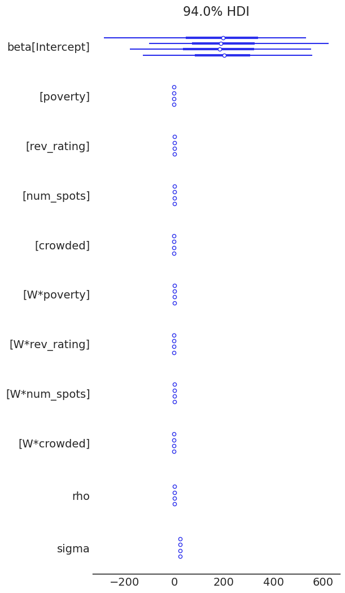
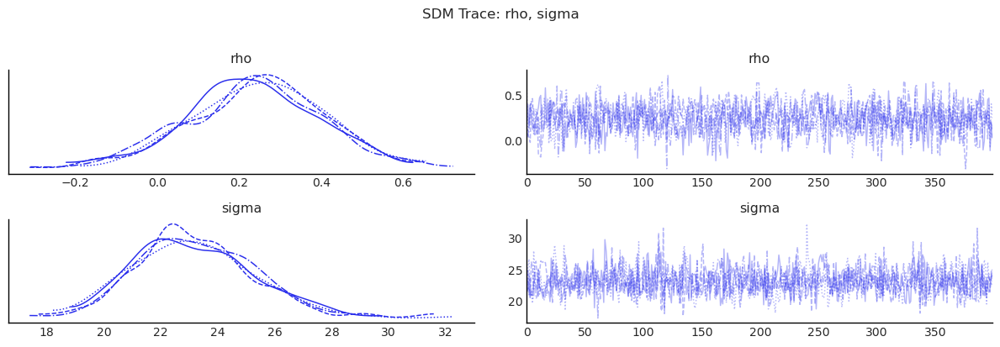
5) SDEM: SLX + Spatial Error¶
Model:
Interpretation:
Neighbor covariates matter directly (through \(WX\)),
and unmodeled shocks are spatially correlated (through \(u\)).
sdem, summary_sdem, effects_sdem = fit_and_report(
SDEM,
formula="price_pp ~ poverty + rev_rating + num_spots + crowded",
data=gdf,
W=W,
)
display(summary_sdem)
display(effects_sdem)
Initializing NUTS using jitter+adapt_diag...
Multiprocess sampling (4 chains in 2 jobs)
NUTS: [lam, beta, sigma]
/home/runner/micromamba/envs/test/lib/python3.14/site-packages/pymc/step_methods/hmc/quadpotential.py:316: RuntimeWarning: overflow encountered in dot
return 0.5 * np.dot(x, v_out)
/home/runner/micromamba/envs/test/lib/python3.14/site-packages/pymc/step_methods/hmc/quadpotential.py:316: RuntimeWarning: overflow encountered in dot
return 0.5 * np.dot(x, v_out)
Sampling 4 chains for 400 tune and 400 draw iterations (1_600 + 1_600 draws total) took 24 seconds.
There were 7 divergences after tuning. Increase `target_accept` or reparameterize.
| mean | sd | hdi_3% | hdi_97% | mcse_mean | mcse_sd | ess_bulk | ess_tail | r_hat | |
|---|---|---|---|---|---|---|---|---|---|
| Intercept | 251.883 | 228.824 | -180.031 | 658.387 | 9.778 | 6.910 | 546.205 | 844.530 | 1.003 |
| poverty | -0.657 | 0.438 | -1.433 | 0.210 | 0.015 | 0.012 | 835.900 | 883.571 | 1.002 |
| rev_rating | 0.265 | 0.937 | -1.330 | 2.182 | 0.032 | 0.021 | 876.250 | 883.847 | 1.000 |
| num_spots | 0.027 | 0.030 | -0.033 | 0.083 | 0.001 | 0.001 | 927.948 | 949.827 | 1.000 |
| crowded | -1.063 | 1.088 | -3.217 | 0.872 | 0.032 | 0.026 | 1111.430 | 1233.770 | 1.002 |
| W*poverty | 0.992 | 0.705 | -0.274 | 2.346 | 0.024 | 0.015 | 893.311 | 1119.110 | 1.003 |
| W*rev_rating | -2.301 | 1.824 | -5.747 | 0.993 | 0.073 | 0.053 | 619.426 | 882.506 | 1.001 |
| W*num_spots | 0.188 | 0.049 | 0.098 | 0.280 | 0.002 | 0.001 | 1040.867 | 917.251 | 1.000 |
| W*crowded | -1.673 | 1.802 | -5.170 | 1.602 | 0.050 | 0.045 | 1278.049 | 1071.784 | 1.004 |
| lam | 0.328 | 0.186 | -0.013 | 0.687 | 0.006 | 0.005 | 862.536 | 911.323 | 1.007 |
| sigma | 23.236 | 1.981 | 19.514 | 26.774 | 0.051 | 0.051 | 1522.447 | 1240.825 | 1.003 |
| direct | direct_ci_lower | direct_ci_upper | direct_pvalue | indirect | indirect_ci_lower | indirect_ci_upper | indirect_pvalue | total | total_ci_lower | total_ci_upper | total_pvalue | |
|---|---|---|---|---|---|---|---|---|---|---|---|---|
| variable | ||||||||||||
| poverty | -0.657320 | -1.512680 | 0.221953 | 0.1375 | 0.992134 | -0.367791 | 2.391898 | 0.14875 | 0.334814 | -0.919677 | 1.636534 | 0.61000 |
| rev_rating | 0.264837 | -1.558551 | 2.142371 | 0.7925 | -2.300681 | -5.746056 | 1.398033 | 0.20875 | -2.035844 | -6.578776 | 2.739942 | 0.39125 |
| num_spots | 0.027076 | -0.036936 | 0.085671 | 0.3575 | 0.188380 | 0.086628 | 0.279665 | 0.00000 | 0.215457 | 0.130673 | 0.293522 | 0.00000 |
| crowded | -1.062503 | -3.191356 | 1.098338 | 0.3000 | -1.672535 | -5.124405 | 2.024662 | 0.32875 | -2.735037 | -6.179684 | 0.433255 | 0.08500 |
az.plot_forest(sdem.inference_data)
display(diagnostics_table(sdem.inference_data, ["lam", "beta", "sigma"]))
show_trace(sdem.inference_data, ["lam", "sigma"], "SDEM Trace: lam, sigma")
| mean | sd | ess_bulk | ess_tail | r_hat | |
|---|---|---|---|---|---|
| lam | 0.328 | 0.186 | 862.536 | 911.323 | 1.007 |
| beta[Intercept] | 251.883 | 228.824 | 546.205 | 844.530 | 1.003 |
| beta[poverty] | -0.657 | 0.438 | 835.900 | 883.571 | 1.002 |
| beta[rev_rating] | 0.265 | 0.937 | 876.250 | 883.847 | 1.000 |
| beta[num_spots] | 0.027 | 0.030 | 927.948 | 949.827 | 1.000 |
| beta[crowded] | -1.063 | 1.088 | 1111.430 | 1233.770 | 1.002 |
| beta[W*poverty] | 0.992 | 0.705 | 893.311 | 1119.110 | 1.003 |
| beta[W*rev_rating] | -2.301 | 1.824 | 619.426 | 882.506 | 1.001 |
| beta[W*num_spots] | 0.188 | 0.049 | 1040.867 | 917.251 | 1.000 |
| beta[W*crowded] | -1.673 | 1.802 | 1278.049 | 1071.784 | 1.004 |
| sigma | 23.236 | 1.981 | 1522.447 | 1240.825 | 1.003 |
/tmp/ipykernel_7231/3581438262.py:11: UserWarning: The figure layout has changed to tight
plt.tight_layout()
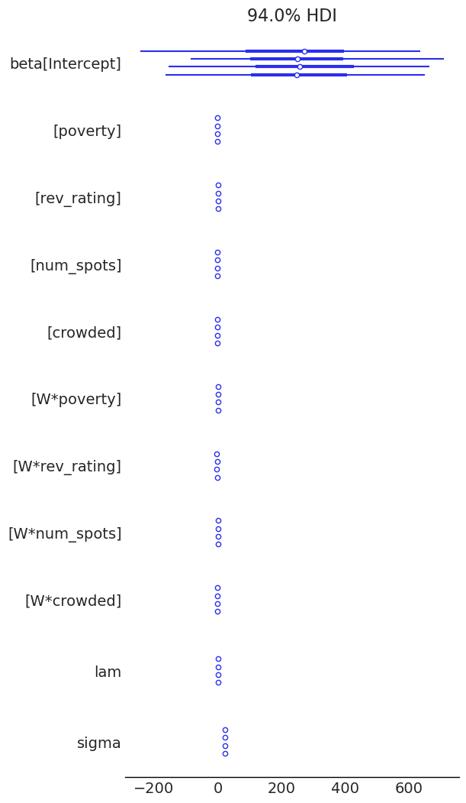
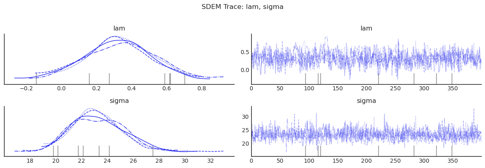
Model Comparison¶
# Collect all fitted models for comparison
model_dict = {
"OLS": ols, "SLX": slx, "SAR": sar, "SEM": sem, "SDM": sdm, "SDEM": sdem,
}
idata_dict = {name: m.inference_data for name, m in model_dict.items()}
Bayes Factor Model Comparison¶
Bayes factors provide an alternative to information criteria for comparing competing models. While WAIC and LOO assess predictive performance, Bayes factors compare marginal likelihoods — the probability of the data under each model, integrated over all parameter values weighted by the prior:
This makes Bayes factors sensitive to the prior: models with diffuse priors on unnecessary parameters are penalized more heavily, because the marginal likelihood averages over all possible parameter values weighted by the prior. In spatial models, this means that models with many WX coefficients under wide priors (e.g., SLX, SDM, SDEM) can receive substantially lower marginal likelihoods than more parsimonious alternatives (e.g., OLS, SAR, SEM) — even if their log-likelihoods are similar.
Interpreting Bayes factors (Kass & Raftery, 1995):
BF range |
Evidence strength |
|---|---|
1 – 3 |
Anecdotal |
3 – 10 |
Moderate |
10 – 30 |
Strong |
30 – 100 |
Very strong |
> 100 |
Extreme |
Method. We use bridge sampling (Meng & Wong, 1996) to estimate each model’s log marginal likelihood, following the R bridgesampling package (Gronau et al., 2020). The implementation uses ESS weighting, two-phase convergence, and MCSE diagnostics. For reliable estimates, 40,000+ posterior samples are recommended.
Important caveat. Bayes factors can be very sensitive to prior specification. Models with diffuse priors on many parameters will tend to have lower marginal likelihoods. This is by design — it is the Bayesian Occam’s razor at work — but it means that Bayes factors and information criteria may disagree when priors are uninformative.
bayes_factor_compare_models(model_dict, method="bridge").round(3)
/tmp/ipykernel_7231/3295012235.py:1: UserWarning: Bridge sampling with 1600 posterior samples for 'OLS' may yield imprecise marginal-likelihood estimates. A conservative rule of thumb is 40,000+ samples (Gronau, Singmann, & Wagenmakers, 2017).
bayes_factor_compare_models(model_dict, method="bridge").round(3)
| OLS | SLX | SAR | SEM | SDM | SDEM | |
|---|---|---|---|---|---|---|
| OLS | 1.000 | 5.797383e+20 | 0.065 | 0.179 | 1.001834e+21 | 5.686367e+20 |
| SLX | 0.000 | 1.000000e+00 | 0.000 | 0.000 | 1.728000e+00 | 9.810000e-01 |
| SAR | 15.426 | 8.943214e+21 | 1.000 | 2.768 | 1.545459e+22 | 8.771958e+21 |
| SEM | 5.572 | 3.230420e+21 | 0.361 | 1.000 | 5.582425e+21 | 3.168560e+21 |
| SDM | 0.000 | 5.790000e-01 | 0.000 | 0.000 | 1.000000e+00 | 5.680000e-01 |
| SDEM | 0.000 | 1.020000e+00 | 0.000 | 0.000 | 1.762000e+00 | 1.000000e+00 |
bayes_factor_compare_models(model_dict, method="bic").round(3)
| OLS | SLX | SAR | SEM | SDM | SDEM | |
|---|---|---|---|---|---|---|
| OLS | 1.000 | 0.426 | 0.123 | 1.480 | 0.966 | 1.551 |
| SLX | 2.346 | 1.000 | 0.289 | 3.472 | 2.266 | 3.639 |
| SAR | 8.120 | 3.461 | 1.000 | 12.017 | 7.841 | 12.594 |
| SEM | 0.676 | 0.288 | 0.083 | 1.000 | 0.652 | 1.048 |
| SDM | 1.036 | 0.441 | 0.128 | 1.533 | 1.000 | 1.606 |
| SDEM | 0.645 | 0.275 | 0.079 | 0.954 | 0.623 | 1.000 |
Bridge Sampling vs. BIC¶
BIC: SAR > SLX > OLS > SEM (SAR wins, SLX is moderate, SEM is worst)
Bridge: SAR > SEM > OLS (SAR wins, SEM is moderate)
The two methods can produce qualitatively different model rankings. This is expected and reflects a fundamental difference in what they assume about priors:
BIC approximates \(\log(ML) \approx \hat\ell_{\max} - \frac{k}{2}\log(n)\), which assumes unit-information priors (priors containing as much information as a single observation). The penalty per parameter is fixed at \(\frac{1}{2}\log(n) \approx 2.1\) for \(n = 77\).
Bridge sampling integrates over the actual priors in the model. When priors are wide (e.g.,
Normal(0, 100)on WX coefficients), the marginal likelihood penalizes each such parameter by roughly \(\log(\sigma_{\text{prior}} / \sigma_{\text{post}})\), which can be 5–10× larger than the BIC penalty.
This is why models with many WX terms (SLX, SDM, SDEM) may look reasonable under BIC but receive extreme Bayes factors under bridge sampling: the wide priors on the WX coefficients are “wasted” — they spread probability mass over implausible parameter values, reducing the marginal likelihood. This is Bayesian Occam’s razor at work, and bridge sampling is generally more trustworthy because it accounts for the actual prior specification.
Model Comparison: WAIC and LOO¶
We compare fitted models using information criteria from ArviZ.
# WAIC and LOO comparison
for ic in ("waic", "loo"):
cmp = az.compare(idata_dict, ic=ic, method="BB-pseudo-BMA")
az.plot_compare(cmp)
/home/runner/micromamba/envs/test/lib/python3.14/site-packages/arviz/stats/stats.py:1652: UserWarning: For one or more samples the posterior variance of the log predictive densities exceeds 0.4. This could be indication of WAIC starting to fail.
See http://arxiv.org/abs/1507.04544 for details
warnings.warn(
/home/runner/micromamba/envs/test/lib/python3.14/site-packages/arviz/stats/stats.py:1652: UserWarning: For one or more samples the posterior variance of the log predictive densities exceeds 0.4. This could be indication of WAIC starting to fail.
See http://arxiv.org/abs/1507.04544 for details
warnings.warn(
/home/runner/micromamba/envs/test/lib/python3.14/site-packages/arviz/stats/stats.py:1652: UserWarning: For one or more samples the posterior variance of the log predictive densities exceeds 0.4. This could be indication of WAIC starting to fail.
See http://arxiv.org/abs/1507.04544 for details
warnings.warn(
/home/runner/micromamba/envs/test/lib/python3.14/site-packages/arviz/stats/stats.py:1652: UserWarning: For one or more samples the posterior variance of the log predictive densities exceeds 0.4. This could be indication of WAIC starting to fail.
See http://arxiv.org/abs/1507.04544 for details
warnings.warn(
/home/runner/micromamba/envs/test/lib/python3.14/site-packages/arviz/stats/stats.py:1652: UserWarning: For one or more samples the posterior variance of the log predictive densities exceeds 0.4. This could be indication of WAIC starting to fail.
See http://arxiv.org/abs/1507.04544 for details
warnings.warn(
/home/runner/micromamba/envs/test/lib/python3.14/site-packages/arviz/stats/stats.py:1652: UserWarning: For one or more samples the posterior variance of the log predictive densities exceeds 0.4. This could be indication of WAIC starting to fail.
See http://arxiv.org/abs/1507.04544 for details
warnings.warn(
/home/runner/micromamba/envs/test/lib/python3.14/site-packages/arviz/stats/stats.py:782: UserWarning: Estimated shape parameter of Pareto distribution is greater than 0.69 for one or more samples. You should consider using a more robust model, this is because importance sampling is less likely to work well if the marginal posterior and LOO posterior are very different. This is more likely to happen with a non-robust model and highly influential observations.
warnings.warn(
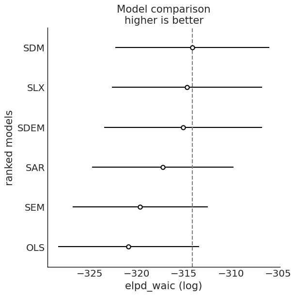
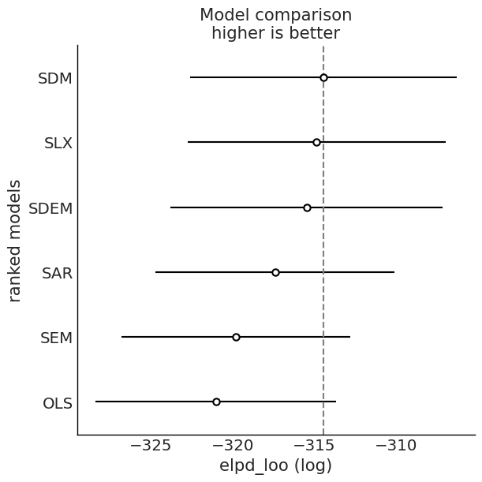
Bayesian LM Specification Tests¶
The bayespecon.diagnostics module provides Bayesian Lagrange-multiplier tests that operate on posterior draws rather than point estimates. These replace the frequentist LM tests that were previously available.
Below we run the Bayesian LM tests from the fitted OLS model:
bayesian_lm_lag_test— tests \(H_0: \rho = 0\) (no spatial lag)bayesian_lm_error_test— tests \(H_0: \lambda = 0\) (no spatial error)bayesian_lm_wx_test— tests \(H_0: \gamma = 0\) (no WX, from SAR null)bayesian_lm_sdm_joint_test— joint test for SDM (\(H_0: \rho = 0\) and \(\gamma = 0\))bayesian_lm_slx_error_joint_test— joint test for SDEM (\(H_0: \lambda = 0\) and \(\gamma = 0\))
Each returns a BayesianLMTestResult with posterior summary statistics and a Bayesian p-value.
# Bayesian LM specification tests
# Each test uses a different null model depending on the hypothesis
lm_tests = {
"LM Lag (H₀: ρ=0)": bayesian_lm_lag_test(ols),
"LM Error (H₀: λ=0)": bayesian_lm_error_test(ols),
"LM WX (H₀: γ=0, SAR null)": bayesian_lm_wx_test(sar),
"LM SDM Joint (H₀: ρ=0 and γ=0)": bayesian_lm_sdm_joint_test(ols),
"LM SDEM Joint (H₀: λ=0 and γ=0)": bayesian_lm_slx_error_joint_test(ols),
}
for label, result in lm_tests.items():
print(f"\n=== {label} ===")
display(summarize_bayesian_lm_test(result))
=== LM Lag (H₀: ρ=0) ===
Bayesian LM Test (bayesian_lm_lag):
Degrees of freedom: 1
Mean: 1.043
Median: 0.487
95% Credible Interval: [0.001, 5.151]
Bayesian p-value: 0.307
=== LM Error (H₀: λ=0) ===
Bayesian LM Test (bayesian_lm_error):
Degrees of freedom: 1
Mean: 4.387
Median: 3.442
95% Credible Interval: [0.771, 13.533]
Bayesian p-value: 0.036
=== LM WX (H₀: γ=0, SAR null) ===
Bayesian LM Test (bayesian_lm_wx):
Degrees of freedom: 4
Mean: 2399840.953
Median: 2152487.553
95% Credible Interval: [445374.368, 6049129.236]
Bayesian p-value: 0.000
=== LM SDM Joint (H₀: ρ=0 and γ=0) ===
Bayesian LM Test (bayesian_lm_sdm_joint):
Degrees of freedom: 5
Mean: 5215857.011
Median: 4873211.601
95% Credible Interval: [1795047.235, 10696517.376]
Bayesian p-value: 0.000
=== LM SDEM Joint (H₀: λ=0 and γ=0) ===
Bayesian LM Test (bayesian_lm_slx_error_joint):
Degrees of freedom: 5
Mean: 6350729.748
Median: 5611159.112
95% Credible Interval: [1645005.959, 15451396.020]
Bayesian p-value: 0.000
None
None
None
None
None
Compare Spatial Parameters Across Models¶
This cell compares posterior means/intervals for the spatial scalar where present:
rhoin SAR/SDMlamin SEM/SDEM
# Compare spatial parameters across models
spatial_rows = []
for name, model, var in [
("SAR", sar, "rho"),
("SEM", sem, "lam"),
("SDM", sdm, "rho"),
("SDEM", sdem, "lam"),
]:
if var in model.inference_data.posterior:
summary = az.summary(model.inference_data, var_names=[var], round_to=3)
summary.insert(0, "model", name)
spatial_rows.append(summary)
pd.concat(spatial_rows)
| model | mean | sd | hdi_3% | hdi_97% | mcse_mean | mcse_sd | ess_bulk | ess_tail | r_hat | |
|---|---|---|---|---|---|---|---|---|---|---|
| rho | SAR | 0.439 | 0.140 | 0.170 | 0.694 | 0.004 | 0.004 | 1251.185 | 938.602 | 1.009 |
| lam | SEM | 0.509 | 0.183 | 0.172 | 0.861 | 0.008 | 0.007 | 554.812 | 277.570 | 1.003 |
| rho | SDM | 0.239 | 0.162 | -0.062 | 0.551 | 0.005 | 0.004 | 1275.488 | 1187.169 | 1.002 |
| lam | SDEM | 0.328 | 0.186 | -0.013 | 0.687 | 0.006 | 0.005 | 862.536 | 911.323 | 1.007 |
Matrix-Mode API Example (Optional)¶
The package also supports direct matrix inputs. This is useful if your design matrix is already engineered.
y = gdf[ycol]
X = gdf[xcols]
sar_matrix = SAR(y=y, X=X, W=W)
sar_matrix.fit(draws=200, tune=200, chains=2, random_seed=7, progressbar=False)
display(sar_matrix.summary(round_to=3))
Initializing NUTS using jitter+adapt_diag...
Multiprocess sampling (2 chains in 2 jobs)
NUTS: [rho, beta, sigma]
/home/runner/micromamba/envs/test/lib/python3.14/site-packages/pymc/step_methods/hmc/quadpotential.py:316: RuntimeWarning: overflow encountered in dot
return 0.5 * np.dot(x, v_out)
/home/runner/micromamba/envs/test/lib/python3.14/site-packages/pymc/step_methods/hmc/quadpotential.py:316: RuntimeWarning: overflow encountered in dot
return 0.5 * np.dot(x, v_out)
Sampling 2 chains for 200 tune and 200 draw iterations (400 + 400 draws total) took 6 seconds.
We recommend running at least 4 chains for robust computation of convergence diagnostics
The rhat statistic is larger than 1.01 for some parameters. This indicates problems during sampling. See https://arxiv.org/abs/1903.08008 for details
The effective sample size per chain is smaller than 100 for some parameters. A higher number is needed for reliable rhat and ess computation. See https://arxiv.org/abs/1903.08008 for details
| mean | sd | hdi_3% | hdi_97% | mcse_mean | mcse_sd | ess_bulk | ess_tail | r_hat | |
|---|---|---|---|---|---|---|---|---|---|
| poverty | 0.046 | 0.281 | -0.463 | 0.539 | 0.016 | 0.015 | 300.333 | 247.832 | 1.035 |
| rev_rating | 0.458 | 0.112 | 0.240 | 0.649 | 0.009 | 0.005 | 153.670 | 290.475 | 1.002 |
| num_spots | 0.079 | 0.023 | 0.042 | 0.127 | 0.001 | 0.001 | 255.255 | 334.916 | 1.004 |
| crowded | -1.668 | 0.878 | -3.134 | 0.151 | 0.057 | 0.043 | 244.280 | 252.719 | 1.002 |
| rho | 0.426 | 0.127 | 0.191 | 0.654 | 0.011 | 0.007 | 145.755 | 254.152 | 1.003 |
| sigma | 24.381 | 2.171 | 20.962 | 28.240 | 0.166 | 0.182 | 192.654 | 230.408 | 1.009 |